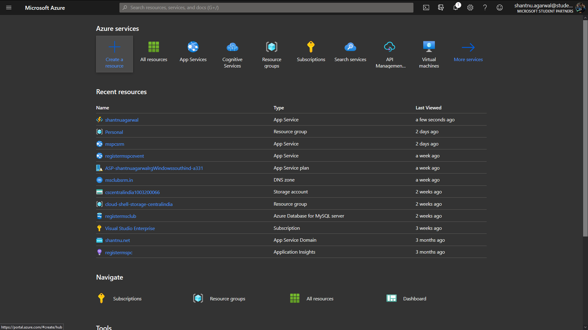
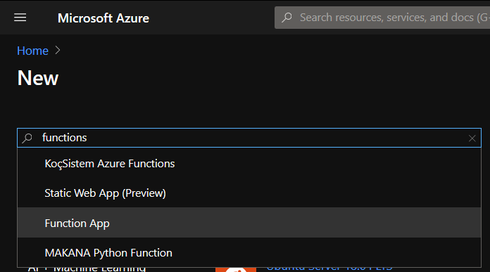
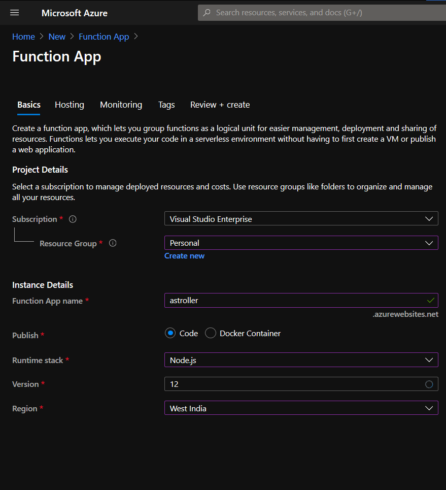
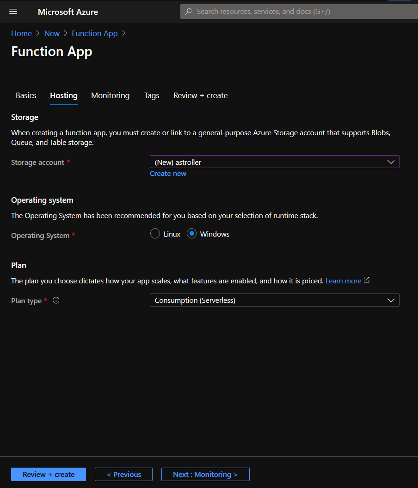
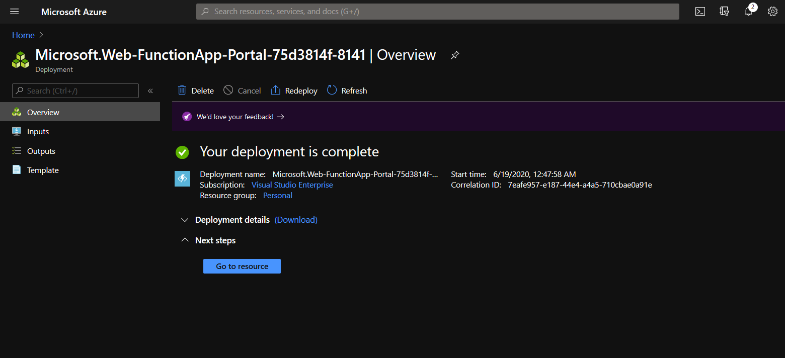
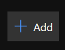
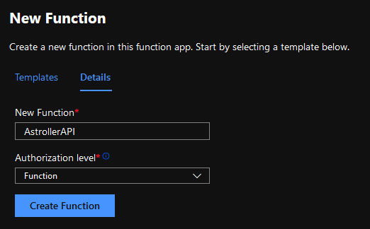
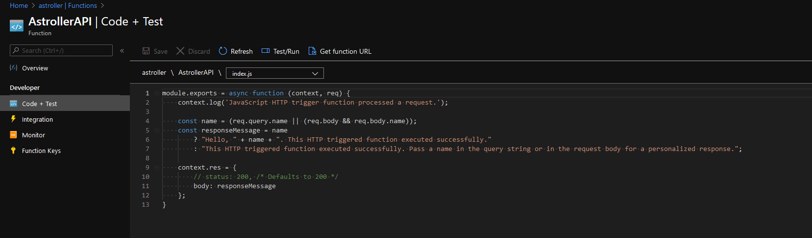
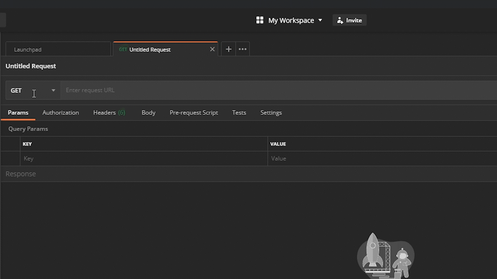

What is the problem that we are looking to solve?
If you have developed an API, you know that all you want to do is make a request, process it on the server and get the response you need. It all comes crashing down when you get stuck setting up the right environment on the server or your dependencies go missing.
What if you only needed to be concerned about what data the API receives, what it does with that data and what it returns as a response? We all fear seeing an internal server error caused by mismatched server configurations.
Most cloud services provide resources that can be scaled up, but you are still charged for each second the app is deployed on the cloud, whether you use it or not.
Azure Functions supports languages including C#, JavaScript, Python, Java and TypeScript. You can write a function in any of these languages and are charged when the function is executed.
What does Azure Functions do?
Azure Functions enables you to run code segments that are well suited to APIs. It also allows code to execute on a timer. For example, if you want to back up a file system every 12 hours to a remote server, you can write a function and Azure Functions will ensure it runs on schedule.
How to make an Azure Function?
There are numerous ways to make an Azure Function. This walkthrough uses the Azure Portal.
Step 1: Create a resource
Open the Azure Portal, log in and select Create a resource to access the Marketplace.

Step 2: Choose Function App
Search for Functions and choose Function App.

Step 3: Configure the function
Click Create to open the function setup. Fill in the details you need and pay attention to the Region because Functions may not be available in every region. The original walkthrough used Node.js v12 LTS and then selected a Storage Account.

Step 4: Configure storage and plan
Storage gives the API or app somewhere to store files and log data. Think of it as a hard disk in the cloud that can store clustered, unstructured data and media files.
If you are on a budget, choose a serverless plan. You are charged for the computation time and memory used rather than paying for a dedicated server while the function is idle.

Step 5: Deploy and test
Enable Application Insights and create the function. Once deployment is complete, open the resource and choose Functions from the left panel.

Select the option to create a new function and choose an HTTP Trigger to build an API.


Function-level authorisation allows access to one function with its own access key. Open the deployed function and choose Code + Test. The portal provides a boilerplate Node.js API that accepts a name parameter and returns a response.

Use the function URL and access key to call the API from Postman or another API testing tool. Pass a name parameter in the query and test the response.

What else can Azure Functions do?
Azure Functions are dynamic. You can:
- Add attachments to a function.
- Run it on a schedule with a timer.
- Automate a manual process whenever a new entry is added to a SQL database.
- Connect it with container storage so the function executes automatically whenever a new blob is uploaded.
There is much more to Azure Functions than a regular HTTP API. The original article closes by encouraging readers to explore the official Azure Functions documentation and experiment with what they have built.